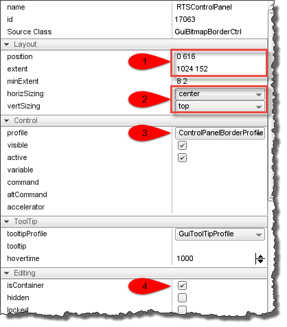

RTS Prototype: Part 2IntroductionIn this document we're going to expand on what we did in Part 1 by adding new unit types, redesigning the interface, implementing a resource management system, and generally extending the functionality to more closely match features found in a basic real-time strategy game. This builds directly on work done in RTS Prototype: Part 1, so if you have not completed it you had better get your rear back over there and finish that before proceeding. The sound files that accompany this tutorial are here (RTS2_sounds.zip). All button and interface image files are inline with the text below. New Unit Type SetupThe first thing we're going to do is create datablocks for our new unit types. This will make it easier for us to get started with most of the other things we're going to be building since everything else ultimately deals with making or controlling them. Under game/art/datablocks, create a new folder called ai and copy game/art/datablocks/aiPlayer.cs into the new folder. Rename game/art/datablocks/ai/aiPlayer.cs to game/art/datablocks/ai/infantry.cs. Next, modify the datablock in the new file so that the new datablock is named InfantryUnit. datablock PlayerData(InfantryUnit : DefaultPlayerData)
{
shootingDelay = 2000;
mainWeapon = Lurker;
};
Do this for the GrenadierUnit, EngineerUnit, and MedicUnit datablocks as well.
Now, in game/art/datablocks/aiPlayer.cs add code to load the new unit datablocks: ...
// load our new AI datablocks:
exec("./ai/infantry.cs");
exec("./ai/engineer.cs");
exec("./ai/grenadier.cs");
exec("./ai/medic.cs");
//-----------------------------------------------------------------------------
// Demo Pathed AIPlayer.
//-----------------------------------------------------------------------------
...
Now we have enough of a stub in for our unit types to proceed with building the UI and unit build request systems. UI RestructureThe current UI works for basic demonstration purposes, but we'll need to add quite a bit to it before it really becomes a useful RTS interface. While we are going to add to it, we are not going to go all out and make a complete interface to rival commercial titles. Our purpose here is still to illustrate how the underlying systems can be built and we need a certain minimum set of interface elements to do that. Create New UI Art ItemsFirst, we're going to need some artwork. I totally cheated and used T3D's "Empty Room" mission to get a profile screenshot of our stock Soldier armed with both the Lurker rifle and the Ryder pistol, then converted this to a silouette to use for my button images. I then took the weapon UI art from the games/art/gui folder to use for additional elements. Finally, I used PaintShop Pro 5 and Paint.NET to hammer out my buttons. Torque 3D uses "nine-slice" images for many of its interface objects. A "nine-slice" image refers to an image that is "sliced" into nine pieces (tic-tac-toe fashion) by a specific color (usually a "pure" primary color like 255,0,0 which rarely shows up in actual images) that the engine loads up as separate image elements internally. The GuiBitmapButtonCtrl does this but uses 36 "slices" arranged vertically in groups of nine. Each slice group contains the image slices for one of its button states (normal, hover/highlight, depressed, and disabled). These are my button images:
The button states are (from top down) Normal, Depressed, Hover, and Disabled. You can download them for use by right-clicking each image and selecting "save image as..." from the context menu. We'll also add some images for other UI elements. Panel and image border nine-slice images, and various sized resource symbol images:
With our assets ready, we just need to add some control profiles and we can start working on the interface layout. In art/gui/customProfiles.cs add the following profile definitions: singleton GuiControlProfile ("ControlPanelBorderProfile")
{
bitmap = "art/gui/panelBorderArray";
hasBitmapArray = true;
opaque = "0";
};
if( !isObject( GuiEngineerButtonProfile ) )
new GuiControlProfile( GuiEngineerButtonProfile )
{
opaque = true;
border = true;
fontColor = "50 50 50";
fontColorHL = "0 0 0";
fontColorNA = "200 200 200";
fixedExtent = false;
justify = "center";
canKeyFocus = false;
bitmap = "./EngineerBtn.png";
hasBitmapArray = true;
category = "Core";
};
if( !isObject( GuiGrenadierButtonProfile ) )
new GuiControlProfile( GuiGrenadierButtonProfile )
{
opaque = true;
border = true;
fontColor = "50 50 50";
fontColorHL = "0 0 0";
fontColorNA = "200 200 200";
fixedExtent = false;
justify = "center";
canKeyFocus = false;
bitmap = "./GrenadierBtn.png";
hasBitmapArray = true;
category = "Core";
};
if( !isObject( GuiInfantryButtonProfile ) )
new GuiControlProfile( GuiInfantryButtonProfile )
{
opaque = true;
border = true;
fontColor = "50 50 50";
fontColorHL = "0 0 0";
fontColorNA = "200 200 200";
fixedExtent = false;
justify = "center";
canKeyFocus = false;
bitmap = "./InfantryBtn.png";
hasBitmapArray = true;
category = "Core";
};
if( !isObject( GuiMedicButtonProfile ) )
new GuiControlProfile( GuiMedicButtonProfile )
{
opaque = true;
border = true;
fontColor = "50 50 50";
fontColorHL = "0 0 0";
fontColorNA = "200 200 200";
fixedExtent = false;
justify = "center";
canKeyFocus = false;
bitmap = "./MedicBtn.png";
hasBitmapArray = true;
category = "Core";
};
if( !isObject( GuiBarracksTeam01ButtonProfile ) )
new GuiControlProfile( GuiBarracksTeam01ButtonProfile )
{
opaque = true;
border = true;
fontColor = "50 50 50";
fontColorHL = "0 0 0";
fontColorNA = "200 200 200";
fixedExtent = false;
justify = "center";
canKeyFocus = false;
bitmap = "./Barracks01Btn.png";
hasBitmapArray = true;
category = "Core";
};
if( !isObject( GuiBarracksTeam02ButtonProfile ) )
new GuiControlProfile( GuiBarracksTeam02ButtonProfile )
{
opaque = true;
border = true;
fontColor = "50 50 50";
fontColorHL = "0 0 0";
fontColorNA = "200 200 200";
fixedExtent = false;
justify = "center";
canKeyFocus = false;
bitmap = "./Barracks02Btn.png";
hasBitmapArray = true;
category = "Core";
};
At this point we should be ready to start on revamping PlayGui. Create RTS InterfaceOpen the GUI Editor and load up PlayGui: With the modifications we made in Part 1, the PlayGui should be the base PlayGui GameTSCtrl control which should contain the centerPrintDlg, the bottomPrintDlg, the LagIcon, and GuiShapeNameHud controls, along with their child controls where appropriate. If any other controls are present in PlayGui they should be removed. Once we have a "clean" PlayGui, we'll add a GuiBitmapBorderCtrl from the Images section of the Library: Rename the new control RTSControlPanel and configure the controls with the following settings:
Here's a screenshot of my settings in the GUI Editor:  Point one is the position and extent, point two is the sizing method, point three is the profile, and point four is the container attribute. We will be placing other controls inside of this one and those controls will depend on this parent control for their layout, so this last is set to true.
Implement Interface Button Callbacks In PlayGuiImplementing the button callbacks in PlayGui should be pretty straightforward. We've already got some cruft left from Part 1, so just fix and add to match the following: // This function is the callback that handles our new button. When you click it
// the button tells the PlayGui that we're now in building placement mode.
function btnBarracks::onClick(%this)
{
PlayGui.placingBuilding = true;
PlayGui.buildingClass = "barracks";
if ($PlacementDecal $= "")
{
// create placement decal and keep it in position with the current mouse location.
}
}
function btnEngineer::onClick(%this)
{
commandToServer('requestEngineer');
}
function btnInfantry::onClick(%this)
{
commandToServer('requestInfantry');
}
function btnGrenadier::onClick(%this)
{
commandToServer('requestGrenadier');
}
function btnMedic::onClick(%this)
{
commandToServer('requestMedic');
}
Note that the InfantryBld button is now the btnBarracks button, so adjust that accordingly and add the other button callback handlers. Create The Base Resource SystemNow that we have buttons to request buildlings and units we're going to need a resource system and a way to manage our buildings and unit requests. I decided to keep it simple, so we'll use a single resource: Money. Our money will automatically replenish itself over time and we'll be able to pick up bonus money for achieving specific battlefield objectives. First, let's create the ResourceManager. This script object is actually not as complex as it sounds - it just tracks object costs and updates client resource displays to reflect each client's current resource level. We'll throw some unit and building costs in here as stand-ins for now, but this will be an important place to come back to when it's time to start balancing the game. In scripts/server create a new script named resourceManager.cs and add the following code to it, then save it. $StartingResources = 150000;
$ResourceReplenish = 10;
$ResourceCap = 500000;
if (!isObject(ResourceManager))
new ScriptObject(ResourceManager);
function ResourceManager::initialize(%this)
{
%this.itemCosts[0] = "barracks,100000";
%this.itemCosts[1] = "Infantry,1000";
%this.itemCosts[2] = "Engineer,2000";
%this.itemCosts[3] = "Grenadier,2500";
%this.itemCosts[4] = "Medic,4000";
%this.schedule(1000, "update");
}
function ResourceManager::update(%this)
{
%count = ClientGroup.getCount();
for(%i = 0; %i < %count; %i++)
{
%client = ClientGroup.getObject(%i);
if(%client.costList $= "")
{
%client.costList = %this.getItemCosts();
commandToClient(%client, 'setItemCosts', %client.team, %client.costList);
}
if(%client.resourceBank $= "")
%client.resourceBank = $StartingResources;
%client.resourceBank += $ResourceReplenish;
if(%client.resourceBank > $ResourceCap)
%client.resourceBank = $ResourceCap;
commandToClient(%client, 'updateResourceDisplay', %client.resourceBank, "");
}
%this.schedule(1000, "update");
}
function ResourceManager::getCost(%this, %itemType)
{
%i = 0;
%entry = %this.itemCosts[%i];
%type = getField(%entry, 0);
%cost = getField(%entry, 1);
while (%entry !$= "" && %type !$= %itemType)
{
%entry = strreplace(%entry, ",", "\t");
%type = getField(%entry, 0);
%cost = getField(%entry, 1);
%entry = %this.itemCosts[%i++];
}
return %cost;
}
function ResourceManager::getItemCosts(%this)
{
%list = "";
%i = 0;
%entry = %this.itemCosts[%i];
while (%entry !$= "")
{
if(%list $= "")
%list = %entry;
else
%list = %list SPC %entry;
%entry = %this.itemCosts[%i++];
}
return %list;
}
First, we create some global script variables so that everyone knows what our starting amount is, how fast our money replenishes, and what our money cap amount is. We follow that by creating the script object itself. In the initialize() method we set our item costs in an array and start our scheduled system update method on a one second schedule. In the update() menthod we walk our clients and send them the item cost list if they don't already have it, update the client's current resource bank appropriately, then send the updated bank amount to be displayed. Finally, we reschedule our upated on our one second tick time. The getCost() method is used by the server commands that create requested buildings or units from client requests. We'll see more of this later. Finally, the getItemCosts() method is used internally to format our cost list to our clients in update() in a tagged string format. In order to use this we'll need to load it, so open scripts/server/scriptExec.cs and add this line: // Load our gametypes
exec("./gameCore.cs"); // This is the 'core' of the gametype functionality.
// --- Add this line between loading gameCore.cs and gameDM.cs
exec("./resourceManager.cs");
// --- done add.
exec("./gameDM.cs"); // Overrides GameCore with DeathMatch functionality.
We'll also want a way to manage building requests. At the moment this just handles barracks buildings, but the BldEventListener::requestBuilding() method is where we would add other types of buildings later. For now, in scripts/server create buildingManager.cs and put the following code in it: function initializeBldEventManager()
{
if (!isObject(BldEventManager))
{
$BldEventManager = new EventManager(BldEventManager)
{
queue = "BldEventQue";
};
// Module related signals
BldEventManager.registerEvent("_RequestBuilding");
}
if (!isObject(BldListener))
{
$BldListener = new ScriptMsgListener(BldListener)
{
class = "BldEventListener";
};
// Module related subscriptions
BldEventManager.subscribe(BldListener, "_RequestBuilding", "requestBuilding");
}
}
// Cleanup the event manager
function destroyBldEventManager()
{
if (isObject(BldEventManager) && isObject(BldListener))
{
// Remove all the subscriptions
BldEventManager.remove(BldListener, "_RequestBuilding");
// Delete the actual objects
BldEventManager.delete();
BldListener.delete();
// Clear the global variables, just in case
$BldEventManager = "";
$BldListener = "";
}
}
function BldEventListener::requestBuilding(%this, %messageData)
{
//%pos, %shape, %class, %team
%pos = getField(%messageData, 0);
%class = getField(%messageData, 1);
%team = getField(%messageData, 2);
switch$(%class)
{
case "barracks":
%shape = "art/shapes/station/station0"@%team@".dts";
}
%count = ClientGroup.getCount();
%client = "";
%found = false;
for(%i = 0; %i < %count; %i++)
{
%client = ClientGroup.getObject(%i);
if(%client.team == %team)
{
%found = true;
break;
}
}
if(!%found)
return;
if(%client.resourceBank < ResourceManager.getCost(%class))
{
bottomPrint(%client, "You don't have enough resources to build this.", 5, "You don't have enough resources to build this.");
return;
}
// spawn a new object at the intersection point
%obj = new TSStatic()
{
position = %pos;
shapeName = %shape;
class = %class;
collisionType = "Visible Mesh";
scale = "0.5 0.5 0.5";
};
%navMesh = 0;
%count = MissionGroup.getCount();
for(%i = 0; %i < %count; %i++)
{
%missionObj = MissionGroup.getObject(%i);
if(%missionObj.getClassName() $= "NavMesh")
{
%navMesh = %missionObj;
break;
}
}
if (%navMesh > 0)
NavMeshUpdateOne(%navMesh, %obj);
// Add the new object to the MissionCleanup group
MissionCleanup.add(%obj);
// Set up a spawn point for new troops to arrive at.
%teamSpawnGroup = "Team" @ %team @ "SpawnGroup";
if (!isObject(%teamSpawnGroup))
{
new SimGroup(%teamSpawnGroup)
{
canSave = "1";
canSaveDynamicFields = "1";
enabled = "1";
};
MissionGroup.add(%teamSpawnGroup);
}
%spawnName = "team" @ %team @ "Spawn" @ %obj.getId();
%point = new SpawnSphere(%spawnName)
{
radius = "1";
dataBlock = "SpawnSphereMarker";
spawnClass = $Game::DefaultPlayerClass;
spawnDatablock = $Game::DefaultPlayerDataBlock;
};
%point.position = VectorAdd(%obj.getPosition(), "0 5 2");
%teamSpawnGroup.add(%point);
MissionCleanup.add(%point);
%client.resourceBank -= ResourceManager.getCost(%class);
commandToClient(%client, 'updateResourceDisplay', %client.resourceBank, %class);
}
If you're watching closely you'll notice that the BldEventListener::requestBuilding() method strongly remsembles what is currently in the scripts/server/commands.cs createBuilding() function - that's because we're moving it from there to here so it's handled by the building management system instead, and that function will request buildings from the building manager. We'll need to load this too, so open scripts/server/scriptExec.cs again and add this line after the last one: // Load our gametypes
exec("./gameCore.cs"); // This is the 'core' of the gametype functionality.
exec("./resourceManager.cs");
// --- Add this line between loading resourceManager.cs and gameDM.cs
exec("./buildingManager.cs");
// --- done add.
exec("./gameDM.cs"); // Overrides GameCore with DeathMatch functionality.
Now that everything is loaded we will open scripts/server/gameDM.cs and in DeathMatchGame::startGame() we'll initialize our new objects: function DeathMatchGame::startGame(%game)
{
//echo (%game @"\c4 -> "@ %game.class @" -> DeathMatchGame::startGame");
parent::startGame(%game);
// initialize our building request and resource systems
initializeBldEventManager();
ResourceManager.initialize();
}
While we're here, let's modify DeathMatchGame::endGame() as well: function DeathMatchGame::endGame(%game)
{
//echo (%game @"\c4 -> "@ %game.class @" -> DeathMatchGame::endGame");
// clean up our building manager before exiting the mission
destroyBldEventManager();
parent::endGame(%game);
}
Since we've moved the heavy lifting to the building manager we can go back to scripts/server/commands.cs and simplify createBuilding() like this: function createBuilding(%client, %pos, %start, %ray, %class)
{
// find end of search vector
%ray = VectorScale(%ray, 2000);
%end = VectorAdd(%start, %ray);
// set up to look for the terrain
%searchMasks = $TypeMasks::TerrainObjectType;
// search!
%scanTarg = ContainerRayCast( %start, %end, %searchMasks );
// If the terrain object was found in the scan
if( %scanTarg )
{
// get the world position of the click
%pos = getWords(%scanTarg, 1, 3);
// Note: getWord(%scanTarg, 0) will get the SimObject id of the object
// that the button click intersected with. This is useful if you don't
// want to place buildings on certain other objects. For instance, you
// could include TSStatic objects in your search masks and check to see
// what you clicked on - then don't place if it's another building.
// spawn a new object at the intersection point
//%pos, %class, %team
BldEventManager.postEvent("_RequestBuilding", %pos TAB %class TAB %client.team);
}
}
New Unit Type Implementation
Create The Medic
Create The Grenadier
Create The Infantryman
Create The Engineer
From "Barracks" to Command Post
The Resource Management System
Starting Resources
Resource "Gathering"
Building Construction Time
Unit Request Time
|